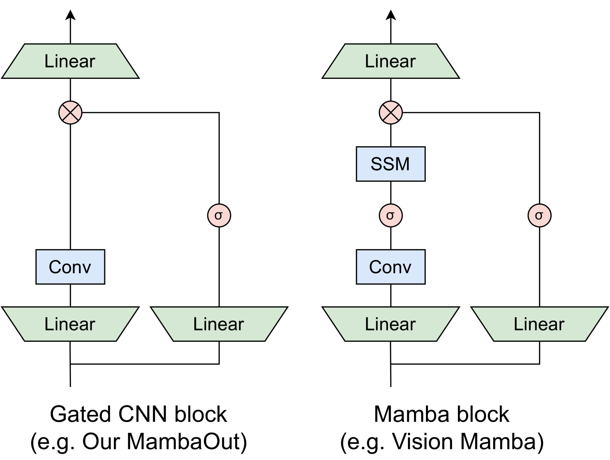
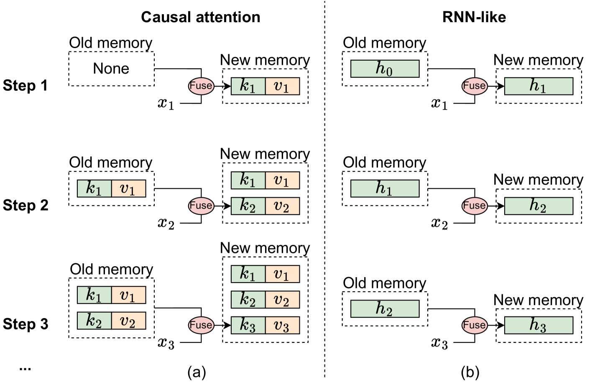
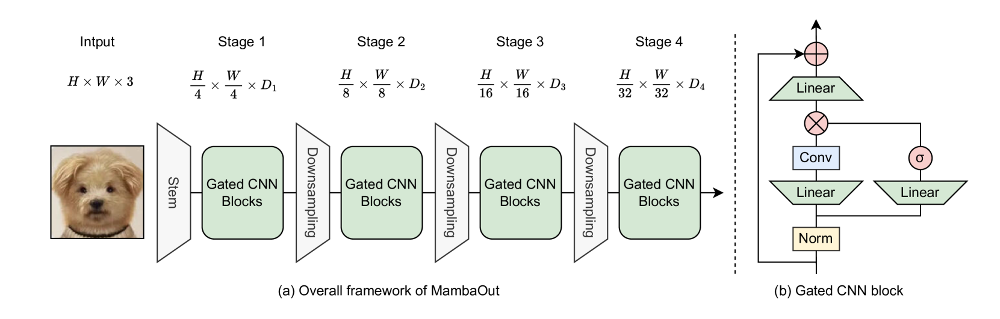
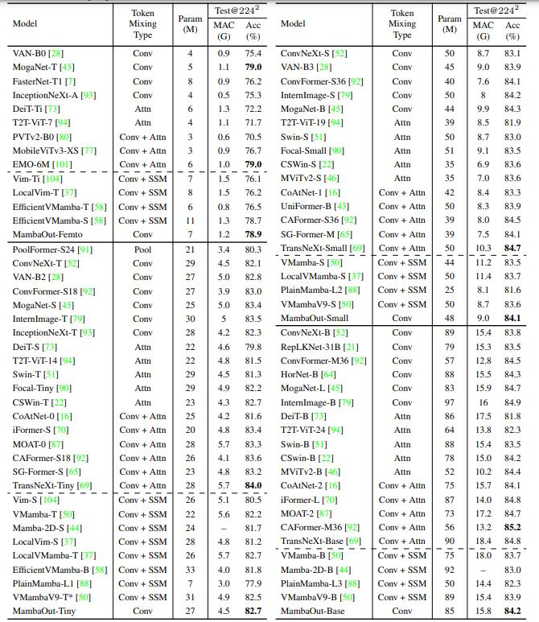
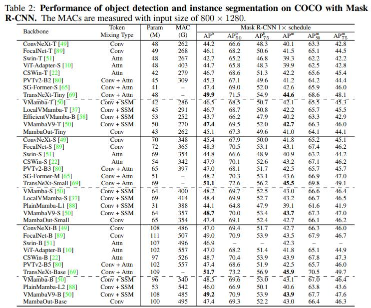

<!DOCTYPE html>


  <html lang="en">
    

    <head>
      <meta charset="utf-8" />
        
      <meta
        name="viewport"
        content="width=device-width, initial-scale=1, maximum-scale=1"
      />
      <title>MambaOut-Do We Really Need Mamba for Vision? |  小熊的小站</title>
  <meta name="generator" content="hexo-theme-ayer">
      
      <link rel="shortcut icon" href="/favicon.ico" />
       
<link rel="stylesheet" href="/dist/main.css">

      
<link rel="stylesheet" href="/css/fonts/remixicon.css">

      
<link rel="stylesheet" href="/css/custom.css">
 
      <script src="https://cdn.staticfile.org/pace/1.2.4/pace.min.js"></script>
       

<script type="text/javascript">
(function(i,s,o,g,r,a,m){i['GoogleAnalyticsObject']=r;i[r]=i[r]||function(){
(i[r].q=i[r].q||[]).push(arguments)},i[r].l=1*new Date();a=s.createElement(o),
m=s.getElementsByTagName(o)[0];a.async=1;a.src=g;m.parentNode.insertBefore(a,m)
})(window,document,'script','//www.google-analytics.com/analytics.js','ga');

ga('create', 'UA-228563528-1', 'auto');
ga('send', 'pageview');

</script>


 
<script>
var _hmt = _hmt || [];
(function() {
	var hm = document.createElement("script");
	hm.src = "https://hm.baidu.com/hm.js?71ee62302f36ca8f840077a641705255";
	var s = document.getElementsByTagName("script")[0]; 
	s.parentNode.insertBefore(hm, s);
})();
</script>


      <link
        rel="stylesheet"
        href="https://cdn.jsdelivr.net/npm/@sweetalert2/theme-bulma@5.0.1/bulma.min.css"
      />
      <script src="https://cdn.jsdelivr.net/npm/sweetalert2@11.0.19/dist/sweetalert2.min.js"></script>

      <!-- mermaid -->
      
      <style>
        .swal2-styled.swal2-confirm {
          font-size: 1.6rem;
        }
      </style>
    </head>
  </html>
</html>


<body>
  <div id="app">
    
      
    <main class="content on">
      <section class="outer">
  <article
  id="post-20240516"
  class="article article-type-post"
  itemscope
  itemprop="blogPost"
  data-scroll-reveal
>
  <div class="article-inner">
    
    <header class="article-header">
       
<h1 class="article-title sea-center" style="border-left:0" itemprop="name">
  MambaOut-Do We Really Need Mamba for Vision?
</h1>
 

      
    </header>
     
    <div class="article-meta">
      <a href="/2024/20240516/" class="article-date">
  <time datetime="2024-05-16T13:59:20.000Z" itemprop="datePublished">2024-05-16</time>
</a>   
<div class="word_count">
    <span class="post-time">
        <span class="post-meta-item-icon">
            <i class="ri-quill-pen-line"></i>
            <span class="post-meta-item-text"> Word count:</span>
            <span class="post-count">1.1k</span>
        </span>
    </span>

    <span class="post-time">
        &nbsp; | &nbsp;
        <span class="post-meta-item-icon">
            <i class="ri-book-open-line"></i>
            <span class="post-meta-item-text"> Reading time≈</span>
            <span class="post-count">4 min</span>
        </span>
    </span>
</div>
 
    </div>
      
    <div class="tocbot"></div>


  
    <div class="article-entry" itemprop="articleBody">
       
  <link rel="stylesheet" type="text&#x2F;css" href="https://cdn.jsdelivr.net/npm/hexo-tag-hint@0.3.1/dist/hexo-tag-hint.min.css"><p>mamba是继transformer之后大火的结构之一。也涌现了各种mamba，各种领域的mamba。本博客<a href="../20240131/">之前</a>也介绍了这一算法。</p>
<p>出自NUS的Weihao Yu, Xinchao Wang等人提出了纯卷积的mamaout意图打败mamba。</p>
<p>MambaOut 模型在 ImageNet 图像分类上超越了所有视觉 Mamba 模型，表明 Mamba 对于该任务确实是不必要的。至于检测和分割，MambaOut 无法与最先进的视觉 Mamba 模型的性能相媲美，这展示了 Mamba 在长序列视觉任务中的潜力。</p>
<p>论文：<a target="_blank" rel="noopener" href="https://arxiv.org/abs/2405.07992">arxiv</a></p>
<p>代码：<a target="_blank" rel="noopener" href="https://github.com/yuweihao/MambaOut">github</a></p>
<span id="more"></span>

<h2 id="结构"><a href="#结构" class="headerlink" title="结构"></a>结构</h2><p></p>
<h2 id="概念讨论"><a href="#概念讨论" class="headerlink" title="概念讨论"></a>概念讨论</h2><p></p>
<p>从记忆角度来看因果注意力和类 RNN 模型的机制说明，其中$x_i$ 表示第 i 步骤的输入标记。 (a) 因果注意力将所有先前标记的键 和值  存储为内存。通过不断添加当前 token 的 key 和 value 来更新内存，因此内存是无损的，但缺点是随着序列的延长，整合旧内存和当前 token 的计算复杂度会增加。因此，注意力可以有效地管理短序列，但可能会遇到较长序列的困难。</p>
<p>相反，类似 RNN 的模型将先前的标记压缩为固定大小的隐藏状态 ℎ ，用作内存。这种固定大小意味着 RNN 内存本质上是有损的，无法与注意力模型的无损内存容量直接竞争。尽管如此，类似 RNN 的模型在处理长序列时可以表现出明显的优势，因为无论序列长度如何，将旧内存与当前输入合并的复杂性保持不变。</p>
<p>总之，Mamba 非常适合具有以下特征的任务：<br>• 特征1：任务涉及处理长序列。<br>• 特征2：任务需要因果标记混合模式。</p>
<h2 id="是否适合"><a href="#是否适合" class="headerlink" title="是否适合"></a>是否适合</h2><p>接下来，论文将讨论视觉识别任务是否表现出这两个特征。</p>
<h3 id="视觉识别任务的序列是否很长"><a href="#视觉识别任务的序列是否很长" class="headerlink" title="视觉识别任务的序列是否很长"></a>视觉识别任务的序列是否很长</h3><p>对于ImageNet上的图像分类，典型的输入图像大小为 224$^{2}$,从而产生块大小为 16$^{2}$的 14$^{2}=196$标记。显然，196 远小于$\tau_\mathrm{small}$和$\tau_\mathrm{base}$ ,表明 ImageNet 上的图像分类不符合长序列任务的条件。</p>
<p>对于 COCO 上的对象检测和实例分割，推理图像大小为$800\times1280$,对于 ADE2oK 上的语义分割，推理图像大小为$512\times2048$ ,令牌数量约为4K，给定补丁大小$16^2$。从$4K&gt;\tau_\mathrm{small}$和$4K\approx\tau_\mathrm{base}$开始，COCO上的检测和ADE2oK上的分割都可以被认为是长序列任务。</p>
<h3 id="视觉识别任务需要因果标记混合模式吗"><a href="#视觉识别任务需要因果标记混合模式吗" class="headerlink" title="视觉识别任务需要因果标记混合模式吗"></a>视觉识别任务需要因果标记混合模式吗</h3><p>作者指出，完全可见的令牌混合模式允许不受限制的混合范围，而因果模式则限制当前令牌只能访问先前令牌的信息。视觉识别被归类为理解任务，其中模型可以立即看到整个图像，从而消除了对令牌混合的限制。对令牌混合施加额外的限制可能会降低模型性能。</p>
<h2 id="实验验证"><a href="#实验验证" class="headerlink" title="实验验证"></a>实验验证</h2><p></p>
<p>Gated CNN 块的算法的PyTorch 代码:</p>
<figure class="highlight python"><table><tr><td class="gutter"><pre><span class="line">1</span><br><span class="line">2</span><br><span class="line">3</span><br><span class="line">4</span><br><span class="line">5</span><br><span class="line">6</span><br><span class="line">7</span><br><span class="line">8</span><br><span class="line">9</span><br><span class="line">10</span><br><span class="line">11</span><br><span class="line">12</span><br><span class="line">13</span><br><span class="line">14</span><br><span class="line">15</span><br><span class="line">16</span><br><span class="line">17</span><br><span class="line">18</span><br><span class="line">19</span><br><span class="line">20</span><br><span class="line">21</span><br><span class="line">22</span><br><span class="line">23</span><br><span class="line">24</span><br><span class="line">25</span><br></pre></td><td class="code"><pre><span class="line"><span class="keyword">import</span> torch</span><br><span class="line"><span class="keyword">import</span> torch.nn <span class="keyword">as</span> nn</span><br><span class="line"><span class="class"><span class="keyword">class</span> <span class="title">GatedCNNBlock</span>(<span class="params">nn.Module</span>):</span></span><br><span class="line"><span class="function"><span class="keyword">def</span> <span class="title">__init__</span>(<span class="params">self, dim, expension_ratio=<span class="number">8</span>/<span class="number">3</span>, kernel_size=<span class="number">7</span>, conv_ratio=<span class="number">1.0</span>,</span></span></span><br><span class="line"><span class="params"><span class="function">norm_layer=partial(<span class="params">nn.LayerNorm,eps=<span class="number">1e-6</span></span>),</span></span></span><br><span class="line"><span class="params"><span class="function">act_layer=nn.GELU,</span></span></span><br><span class="line"><span class="params"><span class="function">drop_path=<span class="number">0.</span></span>):</span></span><br><span class="line"><span class="built_in">super</span>().__init__()</span><br><span class="line">self.norm = norm_layer(dim)</span><br><span class="line">hidden = <span class="built_in">int</span>(expension_ratio * dim)</span><br><span class="line">self.fc1 = nn.Linear(dim, hidden * <span class="number">2</span>)</span><br><span class="line">self.act = act_layer()</span><br><span class="line">conv_channels = <span class="built_in">int</span>(conv_ratio * dim)</span><br><span class="line">self.split_indices = (hidden, hidden - conv_channels, conv_channels)</span><br><span class="line">self.conv = nn.Conv2d(conv_channels, conv_channels, kernel_size=kernel_size, padding=kernel_size//<span class="number">2</span>, groups=conv_channels)</span><br><span class="line">self.fc2 = nn.Linear(hidden, dim)</span><br><span class="line"><span class="function"><span class="keyword">def</span> <span class="title">forward</span>(<span class="params">self, x</span>):</span></span><br><span class="line">shortcut = x <span class="comment"># [B, H, W, C] = x.shape</span></span><br><span class="line">x = self.norm(x)</span><br><span class="line">g, i, c = torch.split(self.fc1(x), self.split_indices, dim=-<span class="number">1</span>)</span><br><span class="line">c = c.permute(<span class="number">0</span>, <span class="number">3</span>, <span class="number">1</span>, <span class="number">2</span>) <span class="comment"># [B, H, W, C] -&gt; [B, C, H, W]</span></span><br><span class="line">c = self.conv(c)</span><br><span class="line">c = c.permute(<span class="number">0</span>, <span class="number">2</span>, <span class="number">3</span>, <span class="number">1</span>) <span class="comment"># [B, C, H, W] -&gt; [B, H, W, C]</span></span><br><span class="line">x = self.fc2(self.act(g) * torch.cat((i, c), dim=-<span class="number">1</span>))</span><br><span class="line"><span class="keyword">return</span> x + shortcut</span><br></pre></td></tr></table></figure>

<h3 id="分类"><a href="#分类" class="headerlink" title="分类"></a>分类</h3><p>下表显示了224*224分辨率下模型在ImageNet上的性能。我们的MambaOut模型采用gate CNN块[60]。Mamba区块源自Gated CNN区块，包含了一个额外的SSM(状态空间模型)。很明显，视觉mamba模型不如MambaOut的性能，更不用说超越最先进的卷积或卷积注意力混合模型了。注意，vmamba9将mamba块的元架构修改为MetaFormer，不同于其他可视化mamba模型和MambaOut</p>
<p></p>
<h3 id="分割"><a href="#分割" class="headerlink" title="分割"></a>分割</h3><p></p>
 
      <!-- reward -->
      
    </div>
    

    <!-- copyright -->
    
    <footer class="article-footer">
       
<div class="share-btn">
      <span class="share-sns share-outer">
        <i class="ri-share-forward-line"></i>
        分享
      </span>
      <div class="share-wrap">
        <i class="arrow"></i>
        <div class="share-icons">
          
          <a class="weibo share-sns" href="javascript:;" data-type="weibo">
            <i class="ri-weibo-fill"></i>
          </a>
          <a class="weixin share-sns wxFab" href="javascript:;" data-type="weixin">
            <i class="ri-wechat-fill"></i>
          </a>
          <a class="qq share-sns" href="javascript:;" data-type="qq">
            <i class="ri-qq-fill"></i>
          </a>
          <a class="douban share-sns" href="javascript:;" data-type="douban">
            <i class="ri-douban-line"></i>
          </a>
          <!-- <a class="qzone share-sns" href="javascript:;" data-type="qzone">
            <i class="icon icon-qzone"></i>
          </a> -->
          
          <a class="facebook share-sns" href="javascript:;" data-type="facebook">
            <i class="ri-facebook-circle-fill"></i>
          </a>
          <a class="twitter share-sns" href="javascript:;" data-type="twitter">
            <i class="ri-twitter-fill"></i>
          </a>
          <a class="google share-sns" href="javascript:;" data-type="google">
            <i class="ri-google-fill"></i>
          </a>
        </div>
      </div>
</div>

<div class="wx-share-modal">
    <a class="modal-close" href="javascript:;"><i class="ri-close-circle-line"></i></a>
    <p>扫一扫，分享到微信</p>
    <div class="wx-qrcode">
      
    </div>
</div>

<div id="share-mask"></div>  
    </footer>
  </div>

   
  <nav class="article-nav">
    
      <a href="/2024/20240605/" class="article-nav-link">
        <strong class="article-nav-caption">上一篇</strong>
        <div class="article-nav-title">
          
            Softmax Linear Units Softmax
          
        </div>
      </a>
    
    
      <a href="/2024/20240513/" class="article-nav-link">
        <strong class="article-nav-caption">下一篇</strong>
        <div class="article-nav-title">Graph-MLP- Node Classification without Message Passing in Graph</div>
      </a>
    
  </nav>

   
 
   
     
</article>

</section>
      <footer class="footer">
  <div class="outer">
    <ul>
      <li>
        Copyrights &copy;
        2019-2024
        <i class="ri-heart-fill heart_icon"></i> LJX
      </li>
    </ul>
    <ul>
      <li>
        
        
        
        Powered by <a href="https://hexo.io" target="_blank">Hexo</a>
        <span class="division">|</span>
        Theme - <a href="https://github.com/Shen-Yu/hexo-theme-ayer" target="_blank">Ayer</a>
        
      </li>
    </ul>
    <ul>
      <li>
        
        
        <span>
  <span><i class="ri-user-3-fill"></i>Visitors:<span id="busuanzi_value_site_uv"></span></span>
  <span class="division">|</span>
  <span><i class="ri-eye-fill"></i>Views:<span id="busuanzi_value_page_pv"></span></span>
</span>
        
      </li>
    </ul>
    <ul>
      
    </ul>
    <ul>
      
    </ul>
    <ul>
      <li>
        <!-- cnzz统计 -->
        
        <script type="text/javascript" src='https://s9.cnzz.com/z_stat.php?id=1278069914&amp;web_id=1278069914'></script>
        
      </li>
    </ul>
  </div>
</footer>    
    </main>
    <div class="float_btns">
      <div class="totop" id="totop">
  <i class="ri-arrow-up-line"></i>
</div>

<div class="todark" id="todark">
  <i class="ri-moon-line"></i>
</div>

    </div>
    <aside class="sidebar on">
      <button class="navbar-toggle"></button>
<nav class="navbar">
  
  <div class="logo">
    <a href="/"></a>
  </div>
  
  <ul class="nav nav-main">
    
    <li class="nav-item">
      <a class="nav-item-link" href="/">主页</a>
    </li>
    
    <li class="nav-item">
      <a class="nav-item-link" href="/archives">目录</a>
    </li>
    
    <li class="nav-item">
      <a class="nav-item-link" href="/about">关于本站</a>
    </li>
    
    <li class="nav-item">
      <a class="nav-item-link" href="/about_me">关于我</a>
    </li>
    
    <li class="nav-item">
      <a class="nav-item-link" href="/photos">人间烟火</a>
    </li>
    
    <li class="nav-item">
      <a class="nav-item-link" target="_blank" rel="noopener" href="https://act18l.github.io/">欧拉计划</a>
    </li>
    
  </ul>
</nav>
<nav class="navbar navbar-bottom">
  <ul class="nav">
    <li class="nav-item">
      
      <a class="nav-item-link nav-item-search"  title="Search">
        <i class="ri-search-line"></i>
      </a>
      
      
    </li>
  </ul>
</nav>
<div class="search-form-wrap">
  <div class="local-search local-search-plugin">
  <input type="search" id="local-search-input" class="local-search-input" placeholder="Search...">
  <div id="local-search-result" class="local-search-result"></div>
</div>
</div>
    </aside>
    <div id="mask"></div>

<!-- #reward -->
<div id="reward">
  <span class="close"><i class="ri-close-line"></i></span>
  <p class="reward-p"><i class="ri-cup-line"></i>请我喝杯咖啡吧~</p>
  <div class="reward-box">
    
    <div class="reward-item">
      
      <span class="reward-type">支付宝</span>
    </div>
    
    
    <div class="reward-item">
      
      <span class="reward-type">微信</span>
    </div>
    
  </div>
</div>
    
<script src="/js/jquery-3.6.0.min.js"></script>
 
<script src="/js/lazyload.min.js"></script>

<!-- Tocbot -->
 
<script src="/js/tocbot.min.js"></script>

<script>
  tocbot.init({
    tocSelector: ".tocbot",
    contentSelector: ".article-entry",
    headingSelector: "h1, h2, h3, h4, h5, h6",
    hasInnerContainers: true,
    scrollSmooth: true,
    scrollContainer: "main",
    positionFixedSelector: ".tocbot",
    positionFixedClass: "is-position-fixed",
    fixedSidebarOffset: "auto",
  });
</script>

<script src="https://cdn.staticfile.org/jquery-modal/0.9.2/jquery.modal.min.js"></script>
<link
  rel="stylesheet"
  href="https://cdn.staticfile.org/jquery-modal/0.9.2/jquery.modal.min.css"
/>
<script src="https://cdn.staticfile.org/justifiedGallery/3.8.1/js/jquery.justifiedGallery.min.js"></script>

<script src="/dist/main.js"></script>

<!-- ImageViewer -->
 <!-- Root element of PhotoSwipe. Must have class pswp. -->
<div class="pswp" tabindex="-1" role="dialog" aria-hidden="true">

    <!-- Background of PhotoSwipe. 
         It's a separate element as animating opacity is faster than rgba(). -->
    <div class="pswp__bg"></div>

    <!-- Slides wrapper with overflow:hidden. -->
    <div class="pswp__scroll-wrap">

        <!-- Container that holds slides. 
            PhotoSwipe keeps only 3 of them in the DOM to save memory.
            Don't modify these 3 pswp__item elements, data is added later on. -->
        <div class="pswp__container">
            <div class="pswp__item"></div>
            <div class="pswp__item"></div>
            <div class="pswp__item"></div>
        </div>

        <!-- Default (PhotoSwipeUI_Default) interface on top of sliding area. Can be changed. -->
        <div class="pswp__ui pswp__ui--hidden">

            <div class="pswp__top-bar">

                <!--  Controls are self-explanatory. Order can be changed. -->

                <div class="pswp__counter"></div>

                <button class="pswp__button pswp__button--close" title="Close (Esc)"></button>

                <button class="pswp__button pswp__button--share" style="display:none" title="Share"></button>

                <button class="pswp__button pswp__button--fs" title="Toggle fullscreen"></button>

                <button class="pswp__button pswp__button--zoom" title="Zoom in/out"></button>

                <!-- Preloader demo http://codepen.io/dimsemenov/pen/yyBWoR -->
                <!-- element will get class pswp__preloader--active when preloader is running -->
                <div class="pswp__preloader">
                    <div class="pswp__preloader__icn">
                        <div class="pswp__preloader__cut">
                            <div class="pswp__preloader__donut"></div>
                        </div>
                    </div>
                </div>
            </div>

            <div class="pswp__share-modal pswp__share-modal--hidden pswp__single-tap">
                <div class="pswp__share-tooltip"></div>
            </div>

            <button class="pswp__button pswp__button--arrow--left" title="Previous (arrow left)">
            </button>

            <button class="pswp__button pswp__button--arrow--right" title="Next (arrow right)">
            </button>

            <div class="pswp__caption">
                <div class="pswp__caption__center"></div>
            </div>

        </div>

    </div>

</div>

<link rel="stylesheet" href="https://cdn.staticfile.org/photoswipe/4.1.3/photoswipe.min.css">
<link rel="stylesheet" href="https://cdn.staticfile.org/photoswipe/4.1.3/default-skin/default-skin.min.css">
<script src="https://cdn.staticfile.org/photoswipe/4.1.3/photoswipe.min.js"></script>
<script src="https://cdn.staticfile.org/photoswipe/4.1.3/photoswipe-ui-default.min.js"></script>

<script>
    function viewer_init() {
        let pswpElement = document.querySelectorAll('.pswp')[0];
        let $imgArr = document.querySelectorAll(('.article-entry img:not(.reward-img)'))

        $imgArr.forEach(($em, i) => {
            $em.onclick = () => {
                // slider展开状态
                // todo: 这样不好，后面改成状态
                if (document.querySelector('.left-col.show')) return
                let items = []
                $imgArr.forEach(($em2, i2) => {
                    let img = $em2.getAttribute('data-idx', i2)
                    let src = $em2.getAttribute('data-target') || $em2.getAttribute('src')
                    let title = $em2.getAttribute('alt')
                    // 获得原图尺寸
                    const image = new Image()
                    image.src = src
                    items.push({
                        src: src,
                        w: image.width || $em2.width,
                        h: image.height || $em2.height,
                        title: title
                    })
                })
                var gallery = new PhotoSwipe(pswpElement, PhotoSwipeUI_Default, items, {
                    index: parseInt(i)
                });
                gallery.init()
            }
        })
    }
    viewer_init()
</script> 
<!-- MathJax -->
 <script type="text/x-mathjax-config">
  MathJax.Hub.Config({
      tex2jax: {
          inlineMath: [ ['$','$'], ["\\(","\\)"]  ],
          processEscapes: true,
          skipTags: ['script', 'noscript', 'style', 'textarea', 'pre', 'code']
      }
  });

  MathJax.Hub.Queue(function() {
      var all = MathJax.Hub.getAllJax(), i;
      for(i=0; i < all.length; i += 1) {
          all[i].SourceElement().parentNode.className += ' has-jax';
      }
  });
</script>

<script src="https://cdn.staticfile.org/mathjax/2.7.7/MathJax.js"></script>
<script src="https://cdn.staticfile.org/mathjax/2.7.7/config/TeX-AMS-MML_HTMLorMML-full.js"></script>
<script>
  var ayerConfig = {
    mathjax: true,
  };
</script>

<!-- Katex -->
 
    
        <link rel="stylesheet" href="https://cdn.staticfile.org/KaTeX/0.15.1/katex.min.css">
        <script src="https://cdn.staticfile.org/KaTeX/0.15.1/katex.min.js"></script>
        <script src="https://cdn.staticfile.org/KaTeX/0.15.1/contrib/auto-render.min.js"></script>
        
    
 
<!-- busuanzi  -->
 
<script src="/js/busuanzi-2.3.pure.min.js"></script>
 
<!-- ClickLove -->

<!-- ClickBoom1 -->

<!-- ClickBoom2 -->

<!-- CodeCopy -->
 
<link rel="stylesheet" href="/css/clipboard.css">
 <script src="https://cdn.staticfile.org/clipboard.js/2.0.10/clipboard.min.js"></script>
<script>
  function wait(callback, seconds) {
    var timelag = null;
    timelag = window.setTimeout(callback, seconds);
  }
  !function (e, t, a) {
    var initCopyCode = function(){
      var copyHtml = '';
      copyHtml += '<button class="btn-copy" data-clipboard-snippet="">';
      copyHtml += '<i class="ri-file-copy-2-line"></i><span>COPY</span>';
      copyHtml += '</button>';
      $(".highlight .code pre").before(copyHtml);
      $(".article pre code").before(copyHtml);
      var clipboard = new ClipboardJS('.btn-copy', {
        target: function(trigger) {
          return trigger.nextElementSibling;
        }
      });
      clipboard.on('success', function(e) {
        let $btn = $(e.trigger);
        $btn.addClass('copied');
        let $icon = $($btn.find('i'));
        $icon.removeClass('ri-file-copy-2-line');
        $icon.addClass('ri-checkbox-circle-line');
        let $span = $($btn.find('span'));
        $span[0].innerText = 'COPIED';
        
        wait(function () { // 等待两秒钟后恢复
          $icon.removeClass('ri-checkbox-circle-line');
          $icon.addClass('ri-file-copy-2-line');
          $span[0].innerText = 'COPY';
        }, 2000);
      });
      clipboard.on('error', function(e) {
        e.clearSelection();
        let $btn = $(e.trigger);
        $btn.addClass('copy-failed');
        let $icon = $($btn.find('i'));
        $icon.removeClass('ri-file-copy-2-line');
        $icon.addClass('ri-time-line');
        let $span = $($btn.find('span'));
        $span[0].innerText = 'COPY FAILED';
        
        wait(function () { // 等待两秒钟后恢复
          $icon.removeClass('ri-time-line');
          $icon.addClass('ri-file-copy-2-line');
          $span[0].innerText = 'COPY';
        }, 2000);
      });
    }
    initCopyCode();
  }(window, document);
</script>
 
<!-- CanvasBackground -->
 
<script src="/js/dz.js"></script>
 
<script>
  if (window.mermaid) {
    mermaid.initialize({ theme: "forest" });
  }
</script>


    
    

  </div>
</body>

</html>